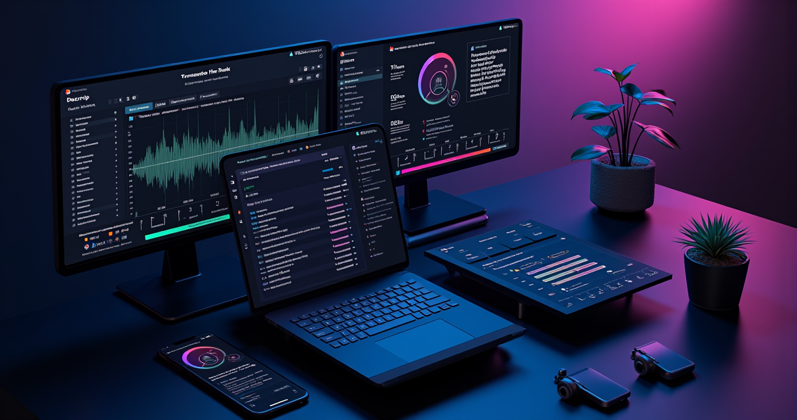

After 3 months of editing podcasts and YouTube videos in Descript, here's what the AI actually gets right — and where it falls apart.
I've been editing video and audio professionally for about six years. Started with Premiere Pro, dabbled in DaVinci Resolve, bounced between Final Cut and various screen recorders. The workflow was always the same: import footage, scrub timeline, razor blade clips, adjust audio, export, repeat until your eyes bleed.
Then someone showed me Descript, and my entire understanding of what "editing" means got rewritten.
The pitch is simple: Descript transcribes your recording, and then you edit the video by editing the text. Delete a sentence from the transcript, and the corresponding video clip disappears. Move a paragraph, and the footage rearranges itself. It sounds like a gimmick until you try it — then it feels like the only sane way to work.
The Feature That Changes Everything
The transcript-based editing isn't just a party trick. It fundamentally alters who can edit video and how fast they can do it.
When I recorded my first podcast episode in Descript, I had the rough cut done in 18 minutes. That same episode in Premiere would have taken me 90 minutes minimum, mostly spent scrubbing back and forth trying to find the exact moment my guest started rambling about their lunch order.
Here's how it actually works: you record or import your audio/video, Descript generates a transcript (accuracy is surprisingly good — I'd estimate 95%+ for clear English), and then you're looking at a Word document. Except every word is linked to a frame in your video. Highlight and delete the words "um, you know, like" and those micro-pauses vanish from the timeline. It's absurdly satisfying.
> "I went from spending 4 hours editing each YouTube video to about 45 minutes. Descript didn't just save me time — it made me actually enjoy editing again." — r/podcasting user
But here's what nobody mentions in the glowing reviews: the transcript accuracy drops significantly with accented speakers, background noise, or technical jargon. I had a guest with a strong Scottish accent, and Descript produced a transcript that read like a fever dream. Fixing the transcript before editing added 20 minutes to the process — still faster than manual timeline editing, but not the magic experience the marketing promises.
Overdub: Genius or Ethical Nightmare?
Descript's Overdub feature lets you clone your own voice and type corrections instead of re-recording. Made a factual error at minute 14 of your podcast? Don't re-record the whole segment — just type the corrected words and Descript generates audio in your voice.
The quality ranges from "indistinguishable from reality" to "obviously a robot" depending on the sentence complexity. Short corrections work flawlessly. Longer passages start sounding like someone doing a mediocre impression of you. I use it primarily for fixing single words or short phrases — anything longer than a sentence gets re-recorded.
The ethical implications are worth mentioning. Descript requires voice verification to prevent unauthorized cloning, which is good. But the technology exists, it works, and it's getting better every quarter. If you're in podcasting or content creation, you need to understand that this tool is available to everyone — including people who might not use it responsibly.
Try Descript Free — No Credit Card Required →
Filler Word Removal: The Silent Hero
If the transcript editing is the headline feature, filler word removal is the one that actually saves the most time.
Every podcaster, every interview host, every YouTuber who records unscripted content deals with the same problem: ums, ahs, "you knows," and awkward pauses. Manually removing these from a traditional timeline is mind-numbing work. Descript finds every single one, highlights them, and lets you bulk-delete with one click.
I tested this on a 45-minute interview that had 287 filler words according to Descript's count. Removing them took 4 seconds. The result sounded natural — not robotic, not over-edited. Just clean.
The tool isn't perfect. It occasionally flags legitimate words as fillers (my habit of saying "right" as a transition word got caught repeatedly), and it doesn't catch every instance. But the hit rate is well above 90%, and you can review the deletions before committing.
Where Descript Falls Short
No tool is perfect, and Descript has real limitations that might be dealbreakers depending on your workflow.
**Not a professional color grading tool.** If you need precise color correction, LUTs, or cinematic color grading, Descript isn't built for that. You can make basic adjustments, but this is a quick-edit tool, not a post-production suite. You'll still need Premiere or DaVinci for polished final output on high-end projects.
**Performance on older hardware.** Descript is resource-hungry. On my 16GB M1 MacBook Air, it runs fine for podcast-length audio. On my older Windows machine with 8GB RAM, it choked on anything longer than 20 minutes of video. The system requirements say 8GB minimum — treat 16GB as the real minimum.
**Export limitations.** The free plan caps you at 720p with watermarks. The Hobbyist plan ($24/month) unlocks 1080p. If you need 4K export, you're looking at the Creator plan at $35/month. For comparison, DaVinci Resolve exports 4K for free — it's just harder to use.
**Collaboration quirks.** The team editing features work, but real-time collaboration can be laggy. We had a few instances where two editors made conflicting changes simultaneously and the merge didn't resolve cleanly. Not a dealbreaker, but not Google Docs-level collaboration either.
The Pricing Reality
Let's talk actual numbers because this is where a lot of reviews get vague.
- **Free:** 1 hour transcription, 720p export with watermark. Enough to test, not enough to use.
- **Hobbyist:** $24/month ($16/month annually). 10 hours transcription, 1080p, no watermark. This is the sweet spot for solo creators.
- **Creator:** $35/month ($24/month annually). 30 hours transcription, 4K export, up to 3 team members. Worth it if you're producing at volume.
- **Business:** $65/month ($48/month annually). Unlimited transcription, advanced collaboration. Overkill unless you're running a production house.
For most podcasters and YouTubers, the Hobbyist plan covers everything you need. The jump from free to $24/month is steep, but the time savings justify it within the first week if you're publishing regularly.
Get the Hobbyist Plan at $16/Month (Annual) →
Who Should Actually Use Descript
Descript is not for everyone. If you're a professional video editor doing commercial work, motion graphics, or cinematic color grading — stick with your NLE of choice. Descript will frustrate you with its limitations.
But if you fall into any of these categories, Descript is probably the best tool available right now:
- **Podcasters** who spend more time editing than recording. The transcript workflow cuts editing time by 60-70% based on my experience.
- **YouTubers** creating talking-head content, tutorials, or interview-based videos. Screen recording + transcript editing = fast turnaround.
- **Course creators** who need to produce educational content at scale without hiring an editor.
- **Marketing teams** creating internal videos, training materials, or social content. The collaboration features make sense at team scale.
- **Solo content creators** who hate editing but need to publish consistently. Descript lowers the skill barrier significantly.
The Verdict After 3 Months
Descript isn't perfect. The color grading is basic, the performance demands are real, and the pricing isn't cheap. But the core promise — edit video as easily as editing a Google Doc — is delivered. Genuinely.
I've cut my video editing time by roughly 65% since switching to Descript for podcast and YouTube work. That's not marketing hyperbole. I tracked my hours. The transcript-based workflow, filler word removal, and Overdub for small corrections have compounded into a fundamentally different editing experience.
If you're still editing talking-head content on a traditional timeline, you're working harder than you need to. Try the free plan. Record a 10-minute video. Edit it by deleting words from the transcript. You'll understand within 10 minutes why people who use Descript don't go back.
Start Editing Smarter — Try Descript Free Today →